personagens
Existem um total de 184 personagens no fallout, nesta pagina iremos falar apenas das "cabeças falantes", que são os personagens com uma importancia no enredo e que tem um modelo próprio, falas digitalizadas e cabeças animadas, em vez de apenas texto mostrando abaixo de uma imagem centralizada do sprite do personagem. Essas cabeças foram criadas pela primeira vez como modelos de argila, digitalizadas usando um Faro Space Arm e VertiSketch, retocadas no LightWave (software de modelagem 3D inicial), texturizadas com Photoshop, animadas e, finalmente, armazenadas como quadros de animação bidimensionais em formato .frm. Junto com uma breve descrição dos personagens
Aradesh

Aradesh foi o líder de Shady Sands em 2161. Nas décadas seguintes, ele passou a organizar a cidade e seus vizinhos na Nova República da Califórnia, tornando-se o primeiro presidente do país.
Overseer
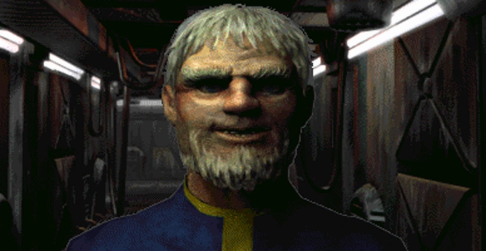O Overseer do Vault 13 é o primeiro personagem visto no jogo e o chefe da casa de Vault Dweller em Fallout.
Butch
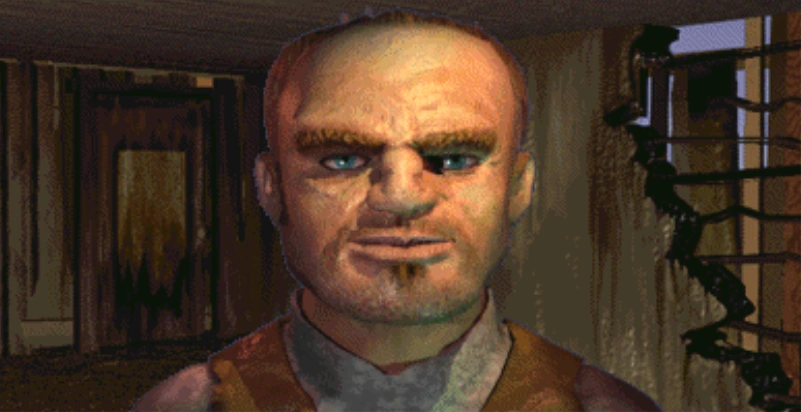Butch Harris é o dono dos "far go traders" no Hub
Cabbot
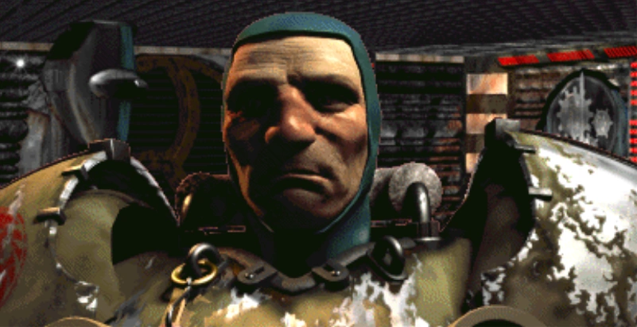Cabbot é um iniciado de alto nivel da Brotherhood of Steel
Decker
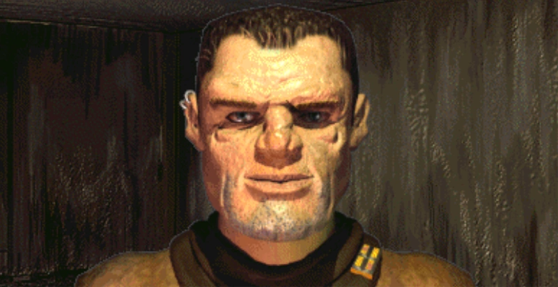Decker é o chefe do crime mais poderoso do Hub e o chefe do Underground
Gizmo
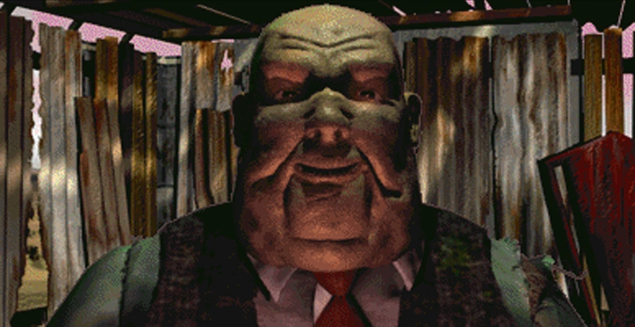Gizmo é o rico proprietário do cassino e do ringue de boxe em Junktown
Harry
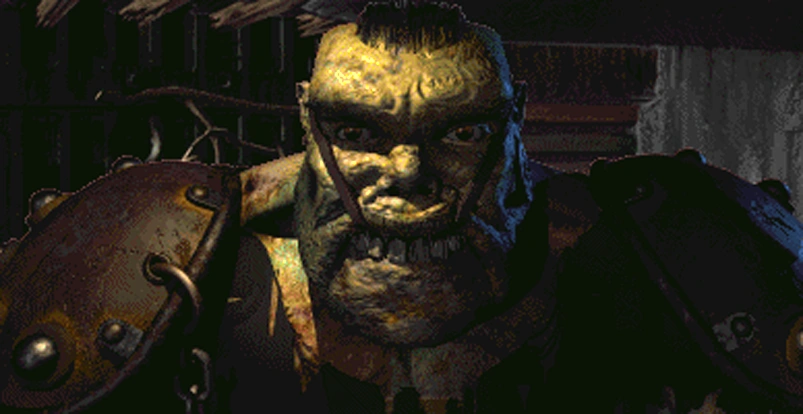Harry é o lider dps super mutantes que protegem e controlam a bacia hidrografica em necropolis. Ele tambem é um espião,ficando de olho em Set para o Lieutenant. Ele está em alerta para qualquer "normal", que tentará capturar e levar para seu chefe.
Jain
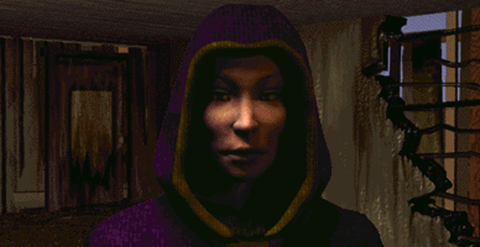Jain acredita totalmente na doutrina e no dogma das Crianças da Catedral. Ela é devota, fanática e teimosa. ela se refere ao Master como "a chama sagrada" e acredita genuinamente que o que ela e as crianças da Catedral estão fazendo é certo.
Killian
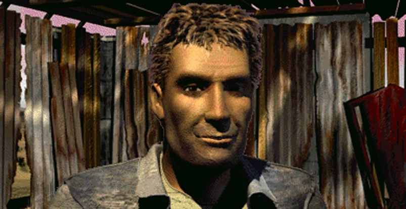Neto do fundador de Junktown e filho de seu prefeito anterior, Killian Darkwater passou um tempo em sua juventude viajando com caravanas, mas acabou se estabelecendo e abriu "Darkwaters", um armazém geral em Junktown. Killian assumiu o papel de prefeito de Junktown após a morte de seu pai.
Laura
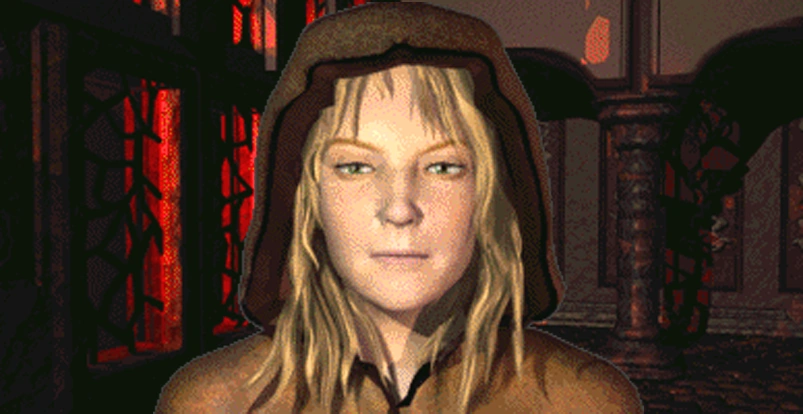Laura é membro das Crianças da Catedral e espiã dos Followers of the Apocallipse.
Lieutenant
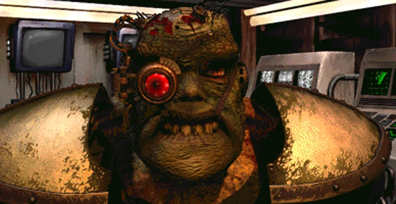O tenente do exercito do Master. É a mão direita do Master e o comandante da base militar "mariposa". ele serve como o antagonista secundário do Fallout 1
Loxley
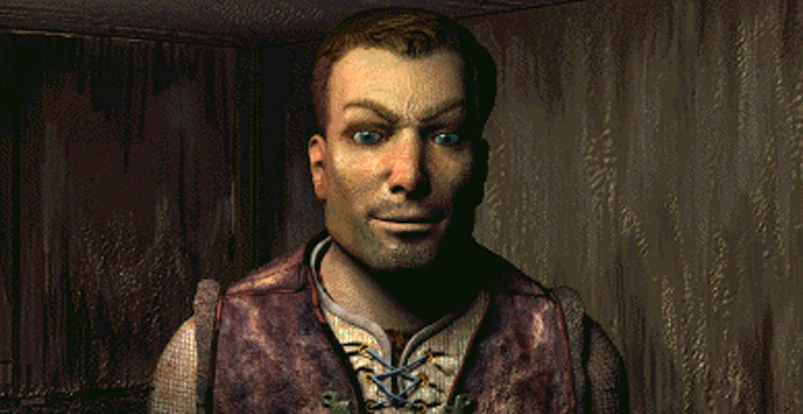Loxley é a cabeça do Circulo de Ladrões. operando de Old Town no Hub
Master
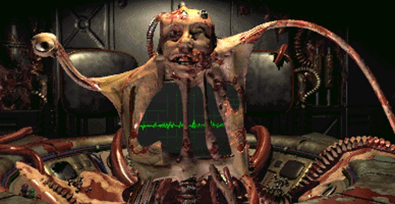O Mestre dos super mutantes ou simplesmente o Master, referido pelas Crianças da catedral como "a chama sagrada", Deus das Trevas, e Pai Esperança, foi o fundador e líder do Unity, uma organizaçao liderada por mutantes dedicada à transformação transumanista da humanidade no mundo pós-nuclear. no momento em que é encontrado pelo Vault Dweller, o Master era um amálgama hibridizado de várias dezenas de humanos e outros mutantes, bem como da rede de computadores da catedral, falando em multiplas vozes e alternando entre elas instantaneamente.
Maxson
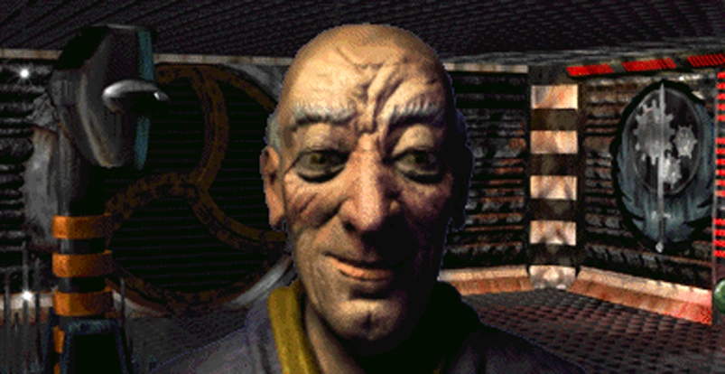John Maxson nasceu na Irmandade em 2097 e faz parte da linhagem Maxson. Ele mostrou muita habilidade como iniciado, cavaleiro e depois mestre cavaleiro, viajando pelos dejetos por toda parte e formando relações duradouras com várias pessoas no deserto, incluindo Butch Harris. [4] [5] [6] Quando ele foi introduzido na casta paladina em 2135, aos 38 anos, ele era um homem habilidoso. Sua reputação e habilidades foram ainda mais mostradas quando ele subiu ao posto de chefe paladino, o melhor comandante dentro da Brotherhood of Steel.
Morpheus
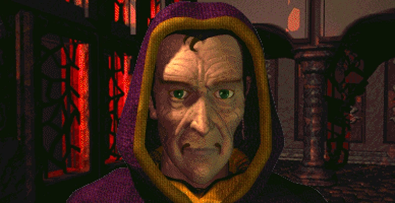líder da Children of the Catedral, indoutrinando pessoas para acreditarem na causa do Master
Nicole
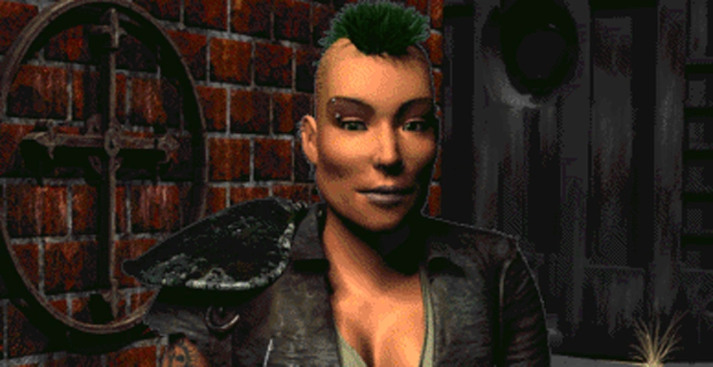líder dos Followers of the Apocallipse, a visão dela é trazer paz ao mundo não violentamente
Rhombus
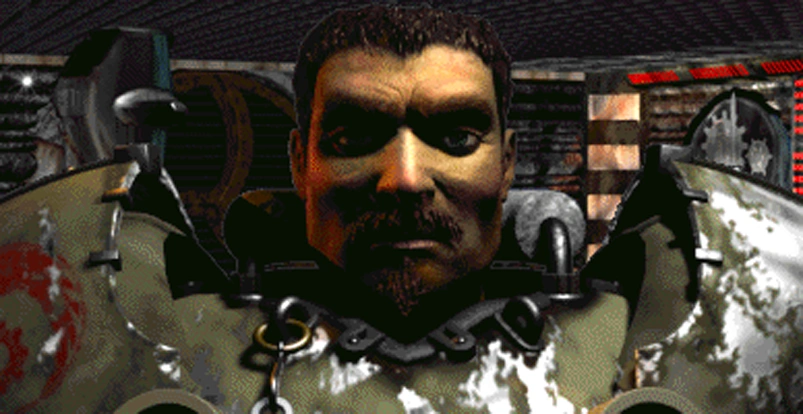O paladino chefe da Brotherhood of Steel. depois da morte de John Maxson, Rhombus é uma figura chave em determinar o curso da Brotherhood, estabelecendo-a como uma casa de enorme desenvolvimento e pesquisa na nova california.
Set
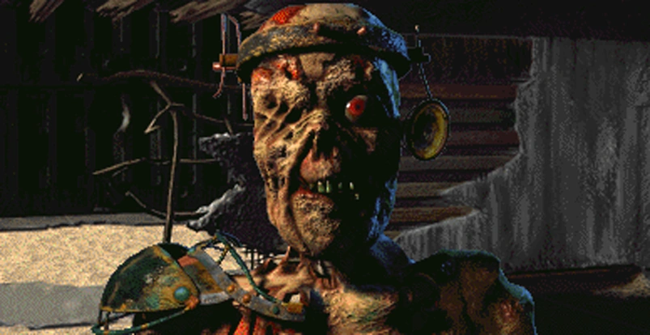Set é o lider de necropolis, se descrevendo como o lider da comunidade dos ghouls. Na realidade, ele está sendo controlado pela Unity, com o harry sendo colocado para vigia-lo. Set é acompanhado por um um guarda costas o tempo todo
Tandi

Tadi é a filha de Aradesh, lider de Shady Sands, e a futura fundadora da Republica de Nova California.
Vree
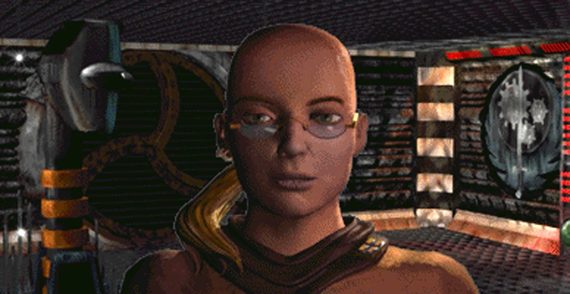a cabeça dos pesquisadores da Brotherhood, seu dever é coletar e preservar conhecimento, tambem como supervisionar os esforços dos outros escribos.
Harold
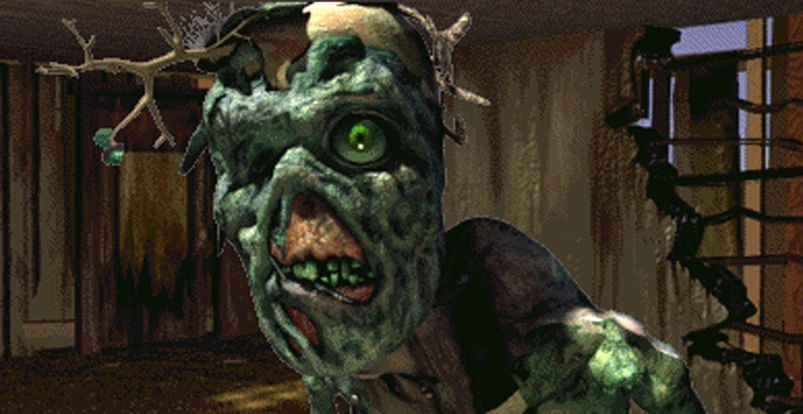Harold é um mutante FEV único que se assemelhava a um tipico ghoul, até que sua fisiologia foi gradualmente alterada por uma arvore parasita que ele chama de Bob. ele sobreviveu a grande guerra em um vault e testemunhou eventos cruciais ao longo da história do pós-guerra